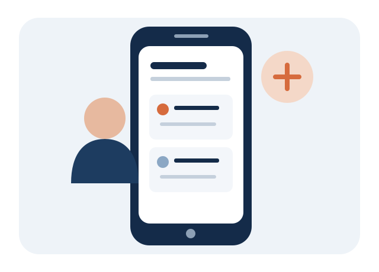

Android — Chrome
- Abra o ConectaTrabalho no Chrome.
- Toque no menu de três pontos do navegador.
- Escolha “Instalar app” ou “Adicionar à tela inicial”, se aparecer.
- Confirme a instalação.
Instale nossa plataforma como um Progressive Web App (PWA). Ela abre em uma janela própria, com ícone na tela inicial, sem precisar baixar um instalador de terceiros.

Quando seu navegador oferecer suporte, toque no botão para instalar o ConectaTrabalho. A confirmação final é feita pelo próprio navegador.
Verificando se a instalação está disponível neste dispositivo...
Depois de instalar, abra o ConectaTrabalho pelo ícone criado no dispositivo.